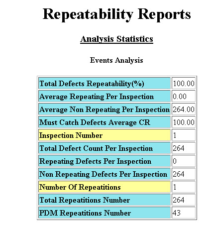

You can generate
a separate Repeatability Analysis report (containing Analysis Statistics,
Defect Repetition Histogram, and Throughput) and save it as an HTML
file.
Procedure
- In the Calibre DefectReview
window, click Reports > Save Repeatability
Reports. A dialog Saving Repeatability Reports box appears.
- In the Saving Repeatability
Reports dialog box, navigate to the save location and enter the
file name.
- Click Save. The Repeatability report
is saved to an HTML file.
- Open the saved file in a web
browser.
Figure 1. Repeatability Reports
Note: If a
Must-Catch file is specified, then the repeatability report also displays
Must-Catch Defect Analysis and the Must Catch Detection Matrix.